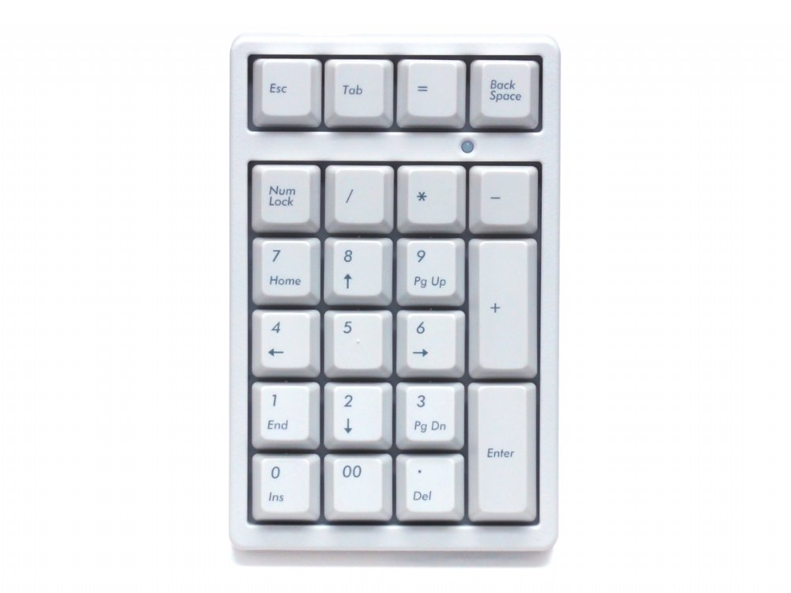

Hoeveelheid toetsen.
Full-size: (100%)
Het Full-size toetsenbord is een van de meest gebruike layouts. Met maarliefst 104 tot 106 toetsen heb je elke mogelijke functie bij de hand. het gehele toetsenbord kan voor sommige mensen al snel als te groot en te zwaar ervaren worden. Dit is de orginele layout en is snel te vinden in kantoren maar ook in scholen.
Full-size
Ten Key Less: (80%)
Er zijn ook TKL-toetsenborden. Deze toetsenborden zijn de "ingekorte versie" van de toetsenborden als we deze normaal kennen. Tenkeyless (geen 10 maar 17). Deze toetsenborden bevatten 87-88 toetsen. Dat is dus een stuk minder dan een standaard toetsenbord. Omdat deze soort een stuk minder toetsen heeft, is hij dus ook een stuk lichter in gewicht en een stuk kleiner. Om deze reden worden deze toetsenborden veelal gebruikt voor het gamen. Zo kunnen mensen sneller bij alle toetsen komen, om zo natuurlijk de overwinning te behalen. Echter worden deze toetsenborden ook gebruikt door mensen en beroepen die snel willen typen. Denk hierbij aan receptionisten bijvoorbeeld. Een nadeel aan dit toetsenbord is dat je geen numpad hebt.
TKL
Compact: (75%)
75% toetsenborden hebben een breedte van ca 70% tot 75% van een normale full size layout. Ze hebben geen numeriek gedeelte, sommige toetsen zitten dichter op elkaar of op andere plekken dan bij een full size toetsenbord, maar bevat nog wel de cijfers en F-toetsen aan de bovenkant.
75%
Compact: (65%)
Nog niet zo lang op de markt als de 60% toetsenborden, maar de 65% toetsenborden werken voor velen een stuk fijner als je lastig kan wennen aan de 60% layout. Praktisch gezien is het ook gewoon een 60% keyboard, maar een 65% toetsenbord beschikt wel over de 4 pijltjestoetsen. Voor de rest heeft deze ook geen numeriek gedeelte en geen F-toetsen. Dit soort functies zijn vaak wel mogelijk, maar dan met de combinatie FN + 1.
65%
Compact: (60%)
60% toetsenborden zijn erg populair onder professionele gamers, omdat alleen de noodzakelijke toetsen aanwezig zijn. Als we het toetsenbord vergelijken met een Full-size, zien we dat naast een groot gedeelte van de rechter toetsen, ook de gehele bovenste rij is weggehaald. Op deze bovenste rij staan "eF-toetsen"e diedie als snelkoppelingen worden gediend zoals je scherm switchen van full-screen. Ook zijn geen pijltjes toetsen aanwezig, echter zal een echte gamer deze toetsen weinig nodig hebben. Met maarliefst 40 tot 45 toetsen heb je niet veel meer mogelijkheden dan enkel teksten schrijven.
60%
40%:
Als je dacht dat het 60%-toetsenbord niet kleiner kan, dan heb je het fout. Zelfs een 40%-toetsenbord bestaat. Als we het toetsenbord vergelijken met die van 60%, zien we dat alles is weggelaten wat weg kan. Een grote verandering is de rij met nummers die is verdwenen. Ook mis je handige functie toetsen zoas dubbele punt of de haakjes.
40%
numpad:
Bij elk van bovenstaande toetsborden op de Full-size na is het "numeriek systeem" weggelaten. Mocht je alsnog cijfers 0-9 en andere functionele toetsen niet willen missen? Dan kun je het numpad los kopen en met een USB aansluiten. Voor gebruikers met een kleine laptop is deze accessoire sterk aan te raden
numpad